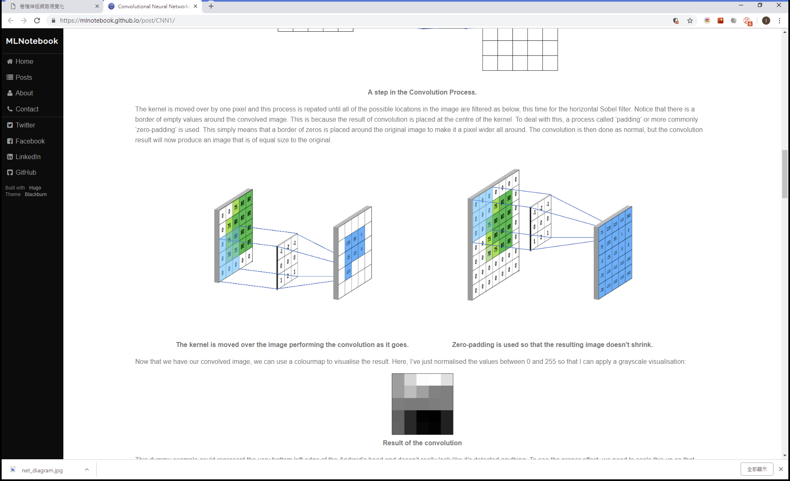

圖片來源:https://www.mathworks.com/solutions/deep-learning/convolutional-neural-network.html
參考文獻
Serverify
Angermueller_et_al-2016-Molecular_Systems_Biology
Keras.js

Keras.js

Fully Convolutional Networks for Semantic Segmentation
Tiny Yolov2

Colorful Image Colorization

Machine Learning Guru

A visual introduction to machine learning

Neural Network
IEEE
CGF
Matlab
Visualizing and Interpreting Convolutional Neural Network
如何通俗易懂地解釋卷積
卷積為什麼叫眷積
Kernel (image processing)
Convolutional Neural Networks - Basics

Visualizing and Understanding Convolutional Networks
drawNet
如何辨別機器學習模型的好壞？秒懂Confusion Matrix
Convolutional Neural Network (CNN)
Visualization of Neural Network Predictions for Weather Forecasting
Mask R-CNN for Object Detection and Segmentation
Face Recognition
Detectron
LUMINOTH
Tological Visualisation of a Convolutional Neural Network
Visualization_for_ML
資料視覺化：
(1) Matplotlib
(2) Seaborn
(3) Plotly (互動式視覺化)
(4) Bokeh (網頁互動式視覺化)
(5) Dash (網頁數據分析應用程式)
(6) Visdom (視覺化製作及分享)
(7) NetworkX (社會網路分析圖)